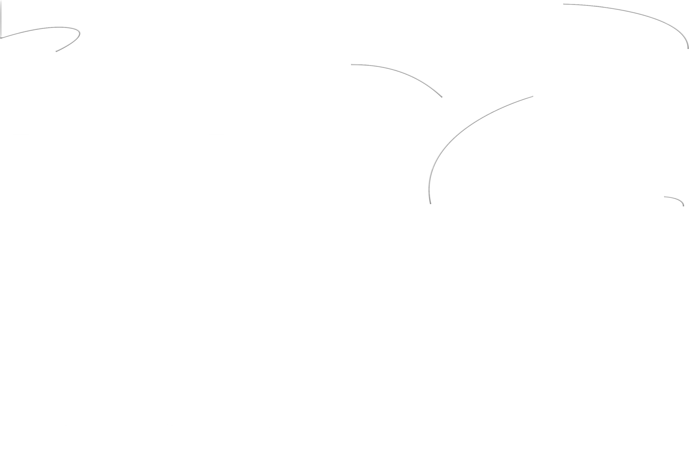
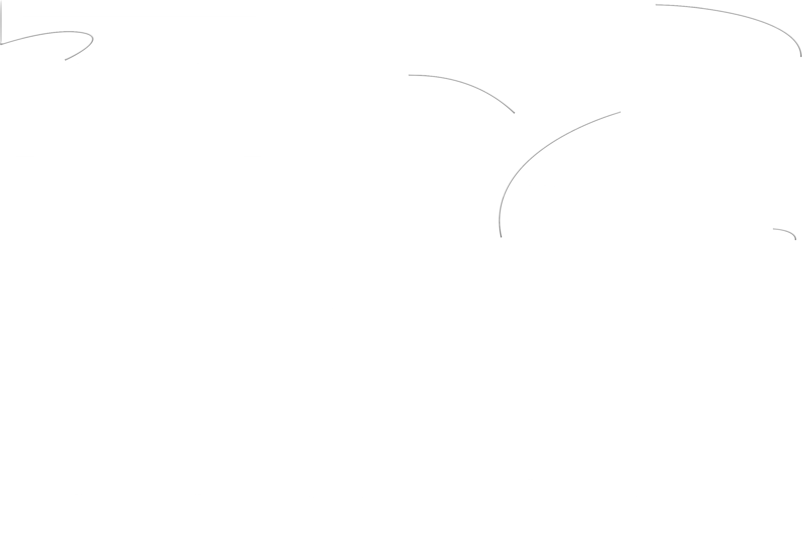
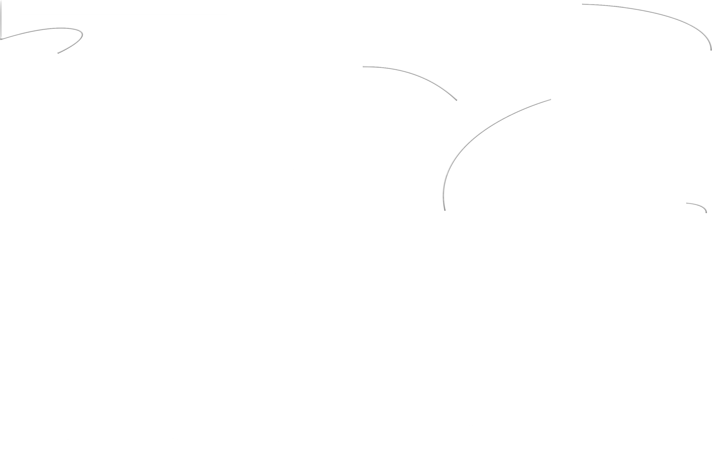
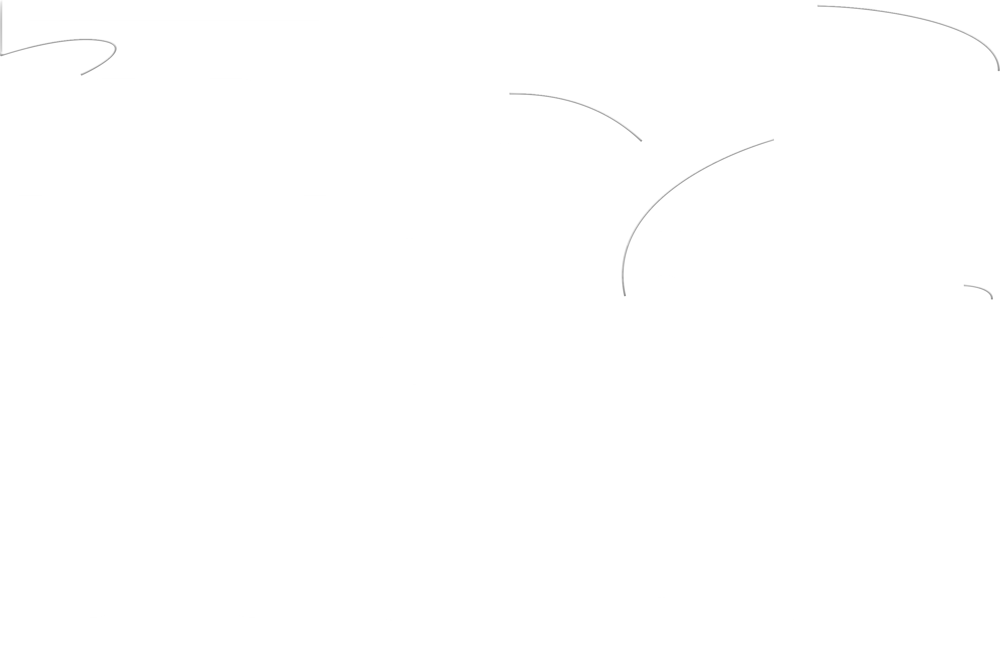

The fifth edition of Kyiv Biennial will be international and will take place in Kyiv, Ivano-Frankivsk,
Uzhhorod, Vienna, Warsaw and Berlin.
In view of the brutal Russian attack on Ukraine, a comprehensive biennial project in Kyiv long seemed deeply
uncertain, if not impossible. But, with a cascade of openings – starting in Kyiv and Vienna in October 2023,
finishing in Berlin in 2024 – the fifth Kyiv Biennial will take place. This Biennial edition is conceived as
a European event, with dispersed exhibitions and public programs in a number of Ukrainian and EU cities, and
realized in partnership with leading European institutions in the field of contemporary art.
Instead of abandoning the project and thus submitting to the logic of war that attacks everything civil, the
2023 Biennial draws upon its founding idea: that of being a multi-centric initiative in a European,
interconnected and solidary form. Art institutions in Ukraine (in Kyiv, Ivano-Frankivsk and Uzhhorod)
organize presentations and events in their endangered yet working infrastructures. Despite the late start of
planning due to the war, museums and exhibition halls in Vienna (the main exhibition spot), Warsaw and
Berlin, together with venues in other European cities, have freed up their spaces and platforms for
exhibitions and events with Ukrainian and international artists as well as for discursive, performative and
educational activities. Together, the institutions have formed a curatorial consortium to jointly create a
conceptual framework within which they develop their respective Kyiv Biennial programs.
How can a country at war address political, social, cultural and societal issues? Today, the experience of
artists and cultural workers in Ukraine is profoundly marked by war trauma, displacement, lack of access to
basic resources and, in many cases, direct involvement in armed resistance or the experience of life under
military occupation. This poses existential challenges for the future of art and cultural production in
Ukraine. The upcoming Biennial aims at reintegrating the Ukrainian artistic community, divided and scattered
throughout Europe by the war, in order to empower its actors to work and reflect collectively and together
with international colleagues on cultural, social and environmental challenges Ukraine is currently facing
and to imagine scenarios for an emancipatory future within a global context.
The Kyiv Biennial strategy, developed in the course of its four previous editions, merges artistic
production, critical knowledge and social engagement in the times of emergency, where curatorship goes far
beyond its contemporary meaning of an artistic and organizational practice and becomes resignified with its
original sense of restoration, rehabilitation and relief, thus suggesting not a biennial, but a perennial
long-run international project, a “Kyiv Perennial.”
Kyiv Biennial 2023 is conceived and organized by the Visual Culture Research Center (Kyiv) together with
tranzit.at (Vienna), tranzit.org (Bratislava, Budapest, Bucharest, Cluj, Iași, Prague and Vienna), Museum of
Modern Art in Warsaw, Museum Crisis Center (Lviv), Other Edges, Dovzhenko Centre (Kyiv), Asortymentna
Kimnata (Ivano-Frankivsk) and Sorry, No Rooms Available (Uzhhorod).